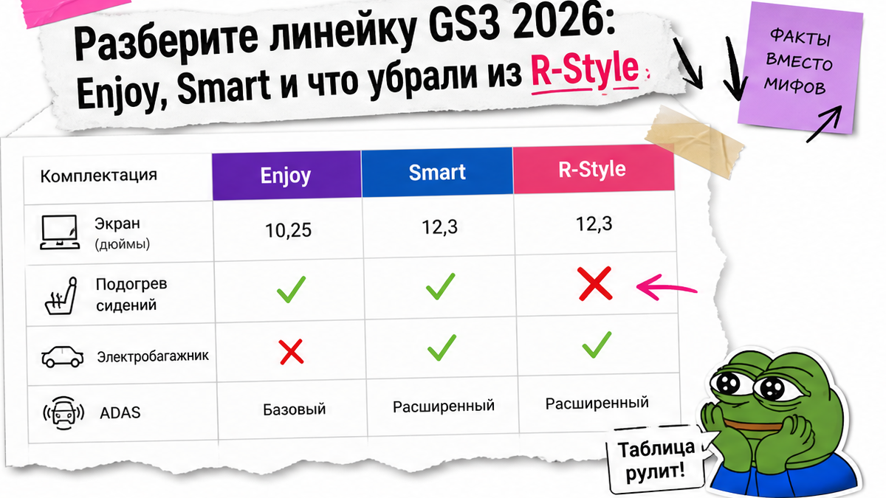
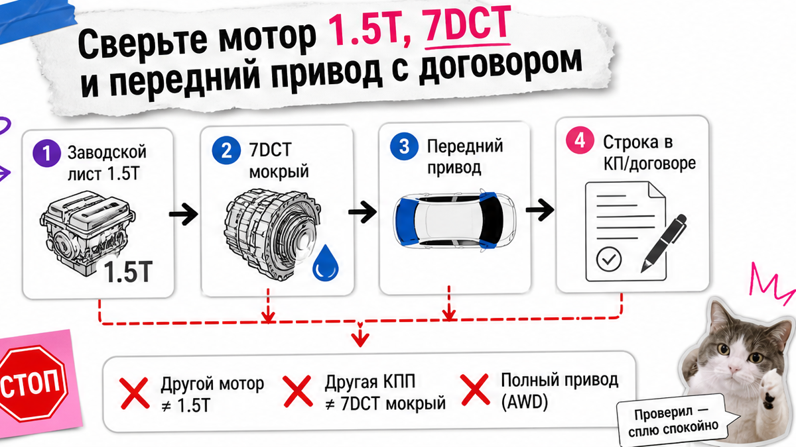
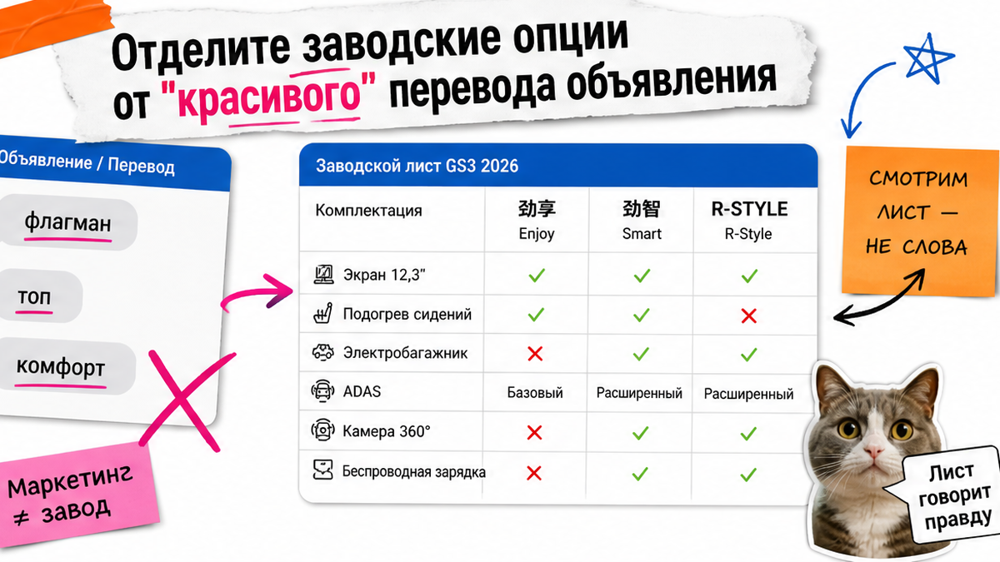

В чате красиво пишут "топ", "флагман" и "R-Style с обогревом и 360", а после брони выясняется: это другая заводская версия без нужных опций, а депозит уже ушёл. Ниже – как выбрать GAC GS3 из Китая до оплаты: сверить Enjoy / Smart / R-Style по заводскому листу, зафиксировать 1.5T + 7DCT и список опций в договоре и записать решение одним словом – плачу, жду или отказ.
Инсайт до депозита: У китайского Trumpchi GS3 (Emzoom) MY2026 силовая одна на все версии: 1.5T, 177 л.с., мокрый 7DCT и передний привод. R-Style – не "всё максимальное": спорт-обвес и ассистенты есть, а подогрев сидений и электробагажник в официальном листе отсутствуют. До перевода нужны заводское имя версии, чеклист опций в договоре и счёт юрлица – не карта физлица.
Типичная история из регионов: человек смотрит ролик про GS3 Emzoom, менеджер кидает "R-Style под ключ, всё есть, депозит сегодня". В голове – "раз R-Style, значит максимум". На практике после оплаты: обвес есть, а подогрева сидений и электробагажника нет. Они как раз у Smart, а не "автоматом" у R-Style. Мы во Владивостоке такое видим не раз.
Свежий риск на 2026-11-04: официальные листы GAC и часть RU-каталогов расходятся. У Enjoy (劲享) экран 10,25″ без подогрева и без адаптивного круиза; у Smart (劲智) – 12,3″, подогрев, электробагажник и пакет ADAS; у R-Style – спорт-кит и ADAS-уровень Smart, но без подогрева и электробагажника. В русских гайдах иногда пишут "обогрев во всех версиях" – это путь к ошибочному депозиту.

Комплектация – заводской набор опций, а не красивое слово в чате. На хабе GAC для MY2026 четыре версии 270T: Entry/Sport (劲取), Enjoy (劲享), Smart (劲智) и R-STYLE. Ориентиры китайского MSRP – 8.58 / 9.58 / 10.58 / 11.18 万元. В договор пишите конкретную версию, не фразу "от".
| Версия | Заводское имя | Экран / климат | Зима и комфорт | ADAS / круиз |
|---|---|---|---|---|
| Enjoy | 劲享 | 10,25″, автоклимат, 360, панорама | Подогрева сидений нет | Обычный CCS, без ACC-пакета |
| Smart | 劲智 | 12,3″, автоклимат, 360 | Подогрев переда, электробагажник, 50W | ACC / AEB / LKA и соседние ассистенты |
| R-Style | R-STYLE | Спорт-обвес, длина 4446 мм | Подогрев и электробагажник в листе – нет | ADAS близок к Smart |
Вердикт по выбору: Нужен баланс без фанатизма по обвесу – часто хватает Enjoy. Нужны подогрев, большой экран и электробагажник – Smart. Нужен спорт-вид и готовы без подогрева/электрокрышки – только тогда R-Style, осознанно.
Делать: до чата выберите один заводской ярлык. Не делать: считать, что R-Style включает всё из Smart.

Мокрый робот 7DCT – семиступенчатая коробка с двумя сцеплениями в масляной ванне: это не вариатор и не "механика для новичка". Передний привод – ведущие колёса спереди; полный привод в этой линейке MY2026 по заводским листам не обещают.
Общая силовая строка на листах gs301–gs304:
Типичная ошибка – спорить про цвет, а в КП уже другой мотор или коробка. Стоп: другой объём, мощность, тип КПП или внезапный "полный привод" без пояснения рынка – не платите, пока не приложат лист этой сборки.
Делать: требуйте в КП ту же строку, что на заводе. Не делать: додумывать привод по фото обвеса.

Названия вроде "Комфорт" или "Флагман" – маркетинг. Экспортные коды HT2A (гайд PortStar от 2026-10-18) – отдельная сетка: там R-Style часто пакет поверх базы. РФ-дилерские GB/GL на Drom и Auto.ru – другая номенклатура и иногда другая мощность (170 л.с. против 177 у китайских Enjoy/Smart).
На практике безопасный порядок такой:
Схема до перевода:
Цель → Заводской лист → Имя версии + силовая строка → Чеклист опций → Смета и юрлицо → Решение: плачу / жду / отказ
Делать: не платить, пока нет заводского имени версии. Не делать: копировать RU-перевод объявления в договор как спецификацию.
Эти пункты чаще всего "рисуют" до депозита. Сверяйте галочками.
Например, менеджер пишет "всё как у флагмана". Вы отвечаете: "Нужны Smart / 劲智, экран 12,3, подогрев переда, электробагажник, ACC. Подтвердите каждый пункт скрином листа". Нет скрина – нет депозита.
Делать: приложение к договору с галочками. Не делать: оплачивать "пакет комфорта" без расшифровки.
До первого перевода ставьте плюс только там, где есть бумага или скрин.
Стоп: карта физлица, размытая комплектация, отказ показать заводской лист. Тогда только "жду" или отказ. Актуальный расчёт под версию – в >каталоге avto-sales125.ru. Форм на странице нет.
Делать: сохранить переписку и одно слово-решение до перевода. Не делать: платить, "чтобы не упустить слот", при дырявой спецификации.
Критерий успеха жёсткий: в договоре стоят заводское имя версии, мощность/коробка/привод и чеклист опций; нет оплаты на карту физлица; решение по депозиту записано одним словом – плачу / жду / отказ. Если всё сошлось – можно считать маршрут Владивосток под выбранную версию. Детали – в >Telegram avtosales125. Хоть один пункт пустой – вы ещё не в зоне безопасного депозита.
Материал проверен: Редакция Авто-Сейлс (эксперты по авто под заказ из Японии, Кореи и Китая).
Достоверность: факты сверены с официальными листами GAC MY2026 (gs301–gs304, хаб gs3_2026), гайдом PortStar HT2A (2026-10-18), каталогами Drom/Auto.ru и практикой заказов через Владивосток; прогон 2026-11-04. Актуальные расчёты – в каталоге, без статичных "цен под ключ" в тексте.
Enjoy даёт панораму, 360 и автоклимат, но экран 10,25″ без подогрева и без ACC-пакета. Smart добавляет экран 12,3″, подогрев переда, электробагажник, зарядку 50W и пакет ассистентов. Выбирайте по чеклисту, а не по слову "топ".
Если подогрев обязателен, целитесь в Smart и фиксируйте его в договоре. R-Style звучит "топом", но по официальному листу подогрева и электробагажника там нет.
Заводское имя версии, строку 1.5T / 7DCT / передний привод, цвет, критичные опции списком, порядок осмотра до выкупа и условия возврата депозита. Нет пунктов – статус "жду", не "плачу".
Нет как на замену китайским Enjoy/Smart/R-Style. Для заказа из Китая просите китайский лист или экспортный код с спецификацией именно этой сборки.
Ответьте списком недостающих документов и поставьте "жду". Если снова давление и карта физлица – отказ. Срочность не заменяет спецификацию.
После PASS по комплектации откройте >каталог Авто-Сейлс и уточните маршрут через Владивосток. В статье нет калькулятора пошлин – цифры живут в актуальном расчёте.